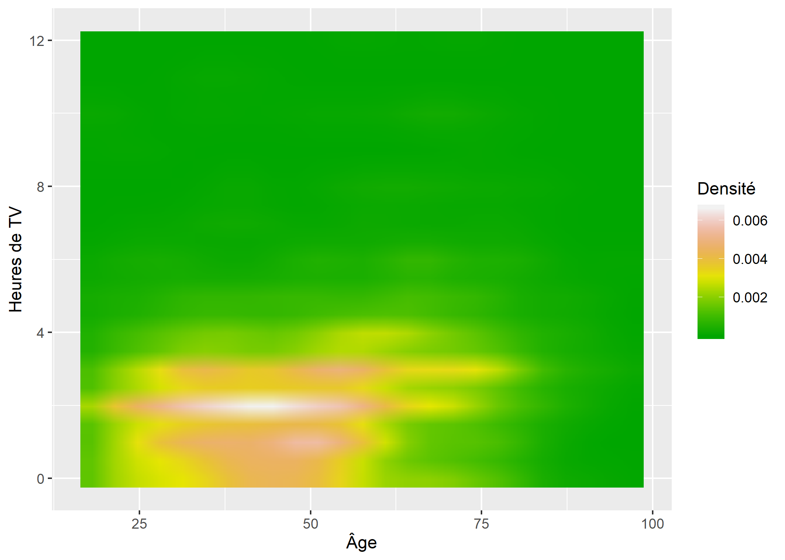
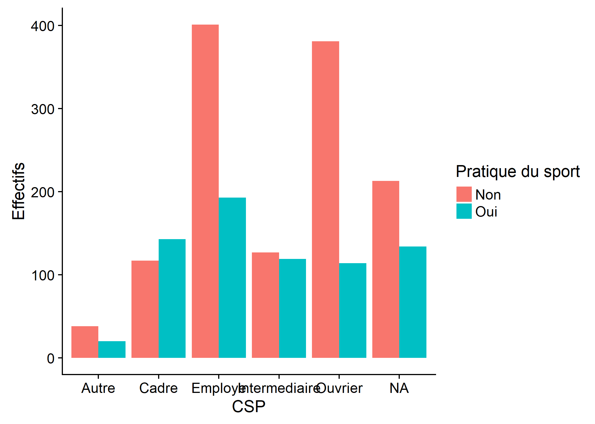
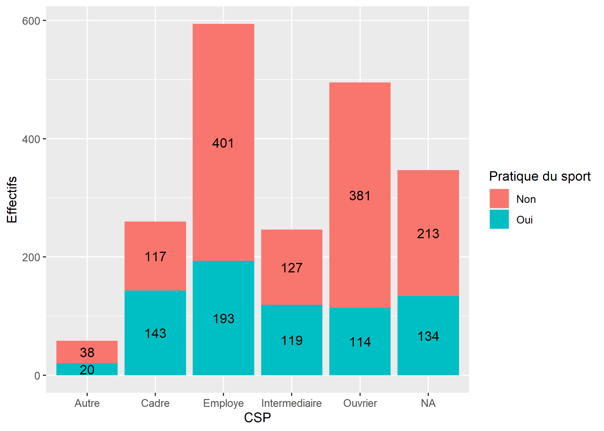
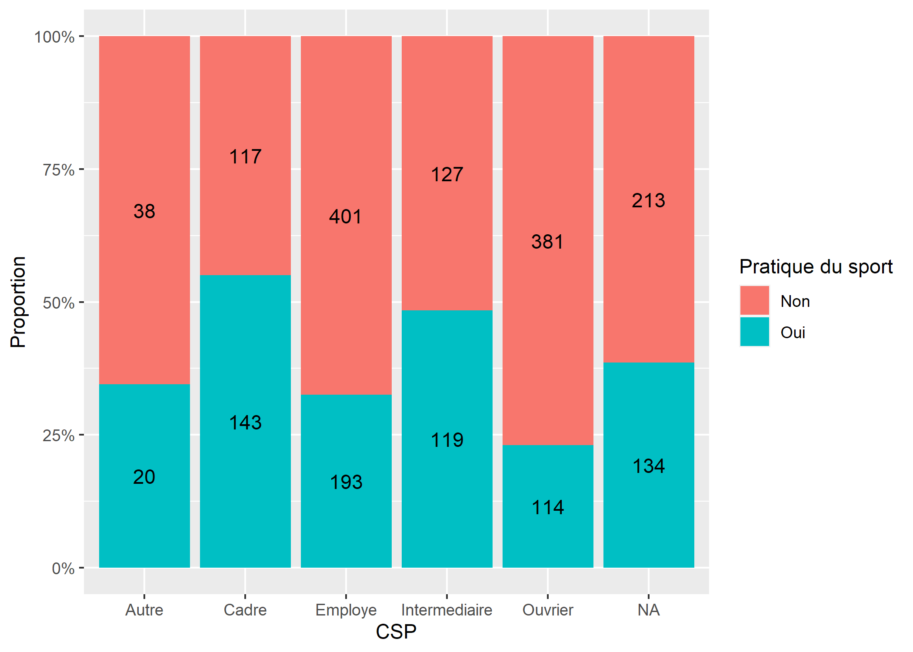
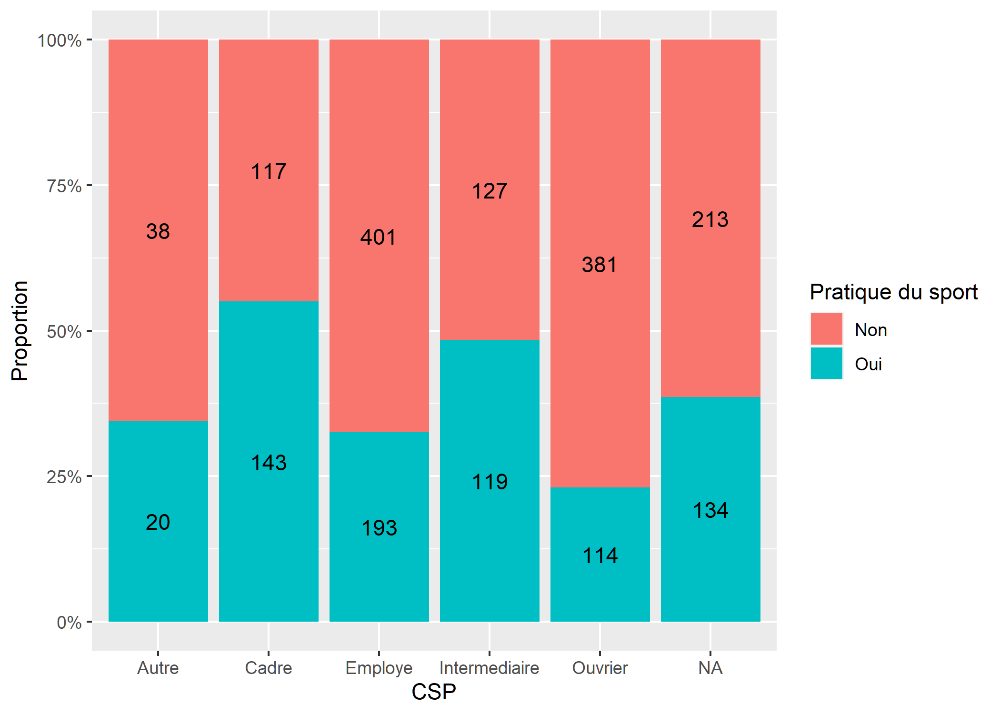

Graphiques univariés et bivariés avec ggplot2
- Retour sur les bases de ggplot2
- Histogramme
- Densité et répartition cumulée
- Boîtes à moustaches (et représentations associées)
- Diagramme en bâtons
- Nuage de points
- Matrice de nuages de points et matrice de corrélation
- Estimation locale de densité (et représentations associées)
- Diagramme de Cleveland
- Diagrammes en barres
- Graphe en mosaïque
- Données labellisées et ggplot2
- Exporter les graphiques obtenus
Après avoir introduit l’extension ggplot2 au travers d’une étude de cas, nous reprenons ici les graphiques produits dans les chapitres statistique univariée et statistique bivariée et montrons comment les réaliser avec ggplot2.
Retour sur les bases de ggplot2
L’extension ggplot2 nécessite que les données du graphique soient sous la forme d’un tableau de données (data.frame) avec une ligne par observation et les différentes valeurs à représenter sous forme de variables du tableau.
Tous les graphiques avec ggplot2 suivent une même logique. En premier lieu, on appelera la fonction ggplot en lui passant en paramètre le fichier de données.
ggplot2 nomme esthétiques les différentes propriétés visuelles d’un graphique, à savoir l’axe des x (x), celui des y (y), la couleur des lignes (colour), celle de remplissage des polygones (fill), le type de lignes (linetype), etc. Une représentation graphique consiste donc à représenter chacune de nos variables d’intérêt selon une esthétique donnée. En second lieu, on appelera donc la fonction aes pour indiquer la correspondance entre les variables de notre fichier de données et les esthétiques du graphique.
A minima, il est nécessaire d’indiquer en troisième lieu une géométrie, autrement dit la manière dont les éléments seront représentés visuellement. À chaque géométrie corresponds une fonction commençant par geom_, par exemple geom_point pour dessiner des points, geom_line pour des lignes, geom_bar pour des barres ou encore geom_area pour des aires. Il existe de nombreuses géométries différentes, chacune prenant en compte certaines esthétiques, certaines étant requises pour cette géométrie et d’autres optionnelles. La liste des esthétiques prises en compte par chaque géométrie en indiquée dans l’aide en ligne de cette dernière.
Pour un document récapitulant les principales géométries et options de ggplot2, on pourra se référer à la Cheat Sheet officielle disponible à https://www.rstudio.com/wp-content/uploads/2015/03/ggplot2-cheatsheet.pdf. Une version en français est disponible à l’adresse http://thinkr.fr/pdf/ggplot2-french-cheatsheet.pdf.
ggplot2 reposant sur une syntaxe additive, la syntaxe de base d’un graphique sera donc de la forme :
De manière alternative, on peut également indiquer la correspondance entre variables et esthétiques comme deuxième argument de la fonction ggplot. Les deux syntaxes sont équivalentes.
Il est ensuite possible de personnaliser de nombreux éléments d’un graphique et notamment :
- les étiquettes ou labs (titre, axes, légendes) avec
ggtitle,xlab,ylabou encore la fonction plus génériquelabs; - les échelles (scales) des différentes esthétiques avec les fonctions commençant par
scale_; - les facettes (facets) avec les fonctions commençant par
facet_; - le système de coordonnées avec les fonctions commençant par
coord_; - la légende (guides) avec les fonctions commençant par
guide_; - le thème du graphiques (mise en forme des différents éléments) avec
theme.
Ces différents éléments seront abordés plus en détails dans le chapitre avancé sur ggplot2. Dans la suite de ce chapitre, nous nous focaliserons sur les graphiques et options de base.

Grammaire des graphiques de ggplot2
Préparons les données des exemples et chargeons ggplot2 :
Histogramme
Pour un histogramme, on aura recours à la géométrie geom_histogram. Si l’on a une observation par ligne dans le fichier de données, l’histogramme s’obtient simplement en associant la variable d’intérêt à l’esthétique x. Notez la syntaxe de aes : le nom des variables est indiqué directement, sans guillemets.
ggplot(d) +
aes(x = heures.tv) +
geom_histogram() +
ggtitle("Nombres d'heures passées devant la télévision") +
xlab("Heures") +
ylab("Effectifs")On peut personnaliser la couleur de remplissage des rectangles en indiduant une valeur fixe pour l’esthétique fill dans l’appel de geom_histogram (et non via la fonction aes puisqu’il ne s’agit pas d’une variable du tableau de données). L’esthétique colour permet de spécifier la couleur du trait des rectangles. Enfin, le paramètre binwidth permet de spécifier la largeur des barres.
ggplot(d) +
aes(x = heures.tv) +
geom_histogram(fill ="orange", colour = "black", binwidth = 2) +
ggtitle("Nombres d'heures passées devant la télévision") +
xlab("Heures") +
ylab("Effectifs")Comme avec la fonction hist, on peut personnaliser les classes avec l’argument breaks.
ggplot(d) +
aes(x = heures.tv) +
geom_histogram(fill ="orange", colour = "black", breaks = c(0, 1, 4, 9, 12)) +
ggtitle("Nombres d'heures passées devant la télévision") +
xlab("Heures") +
ylab("Effectifs")On peut ajouter à l’axe des x des tirets représentant la position des observations à l’aide de geom_rug.
ggplot(d) +
aes(x = heures.tv) +
geom_histogram(fill ="orange", colour = "black", binwidth = 2) +
geom_rug() +
ggtitle("Nombres d'heures passées devant la télévision") +
xlab("Heures") +
ylab("Effectifs")Densité et répartition cumulée
Une courbe de densité s’obtient aisément avec la géométrie geom_density.
ggplot(d) +
aes(x = heures.tv) +
geom_density() +
ggtitle("Nombres d'heures passées devant la télévision") +
xlab("Heures") +
ylab("Densité")On peut personnaliser la fenêtre d’ajustement avec l’argument adjust.
ggplot(d) +
aes(x = heures.tv) +
geom_density(adjust = 1.5) +
ggtitle("Nombres d'heures passées devant la télévision") +
xlab("Heures") +
ylab("Densité")
Pour la fonction de répartition empirique ou empirical cumulative distribution function en anglais, on utilisera la statistique stat_ecdf. Au passage, on notera qu’il est possible d’ajouter une couche à un graphique en appelant soit une géométrie, soit une statistique.
ggplot(d) +
aes(x = heures.tv) +
stat_ecdf() +
xlab("Heures") +
ylab("Fonction de répartition cumulée")Boîtes à moustaches (et représentations associées)
La géométrie geom_boxplot nécessite a minima deux esthétiques : x et y. Pour représenter une variable quantitative selon une variable catégorielle, on fera donc :
ggplot(d) +
aes(x = hard.rock, y = age) +
geom_boxplot() +
xlab("Ecoute du hard rock") +
ylab("Âge") +
ggtitle("Répartition par âge selon que l'on écoute du hard rock ou non")Lorsque l’on souhaite représenter une seule variable quantitative (statistique univariée), on passera alors une constante à l’esthétique x.
ggplot(d) +
aes(x = "Nombre d'heures passées devant la télévision", y = heures.tv) +
geom_boxplot() +
xlab("") +
ylab("Heures quotidiennes")Une représentation alternative aux boîtes à moustaches ou boxplots sont les graphiques en violon ou violin plots, qui représentent la densité de distribution. Ils s’obtiennent avec la géométrie geom_violin.
ggplot(d) +
aes(x = hard.rock, y = age) +
geom_violin() +
xlab("Ecoute du hard rock") +
ylab("Âge") +
ggtitle("Répartition par âge selon que l'on écoute du hard rock ou non")Les boîtes à moustache peuvent parfois être trompeuses car ne représentant qu’imparfaitement la distribution d’une variable quantitative. Voir par exemple The boxplot and its pitfalls sur https://www.data-to-viz.com.
Les graphique de pirates ou pirateplot sont une visualisation alternative qui combinent :
- un nuage de points représentant les données brutes ;
- une barre verticale représentant la moyenne ;
- un rectangle traduisant l’intervalle de confiance de cette moyenne ;
- un
violon
indiquant la distribution.
L’extension ggpirate fournit une géométrie geom_pirate pour ggplot2. Cette extension n’étant disponible que sur GitHub, on l’installera avec la commande :
library(ggpirate)
ggplot(d) +
aes(x = hard.rock, y = age, colour = hard.rock, fill = hard.rock) +
geom_pirate() +
xlab("Ecoute du hard rock") +
ylab("Âge") +
ggtitle("Répartition par âge selon que l'on écoute du hard rock ou non") +
theme_minimal() +
theme(panel.grid.minor = element_blank())piratesou pirateplot
Diagramme en bâtons
Un diagramme en bâtons s’obtient avec la géométrie geom_bar.
ggplot(d) +
aes(x = freres.soeurs) +
geom_bar() +
xlab("Nombre de frères et soeurs") +
ylab("Effectifs")La largeur des barres par défaut est de 0,9. Dès lors, le graphique ressemble plus à un histogramme qu’à un diagramme en bâtons. On peut personnaliser ce paramètre avec l’argument width.
ggplot(d) +
aes(x = freres.soeurs) +
geom_bar(width = .2) +
xlab("Nombre de frères et soeurs") +
ylab("Effectifs")Nuage de points
Un nuage de points se représente facilement avec la géométrie geom_point.
ggplot(d) +
aes(x = age, y = heures.tv) +
geom_point() +
xlab("Âge") +
ylab("Heures quotidiennes de télévision")On pourra personnaliser la couleur des points avec colour et le niveau de transparence avec alpha.
ggplot(d) +
aes(x = age, y = heures.tv) +
geom_point(colour = "red", alpha = .2) +
xlab("Âge") +
ylab("Heures quotidiennes de télévision")
Pour représenter une troisième variable quantitative, on pourra faire varier la taille des points avec l’esthétique size. Pour une variable qualitative, on pourra faire varier la couleur avec colour. Pour faciliter la lecture, on positionnera la légende en bas du graphique, en modifiant l’argument legend.position via la fonction theme.
data("rp99")
rp99$prop.proprio <- 0
rp99[rp99$proprio >= mean(rp99$proprio), ]$prop.proprio <- 1
rp99$prop.proprio <- factor(rp99$prop.proprio, 0:1, c("non", "oui"))
ggplot(rp99) +
aes(x = dipl.aucun, y = tx.chom, size = pop.tot, colour = prop.proprio) +
geom_point(alpha = .5) +
xlab("% sans diplôme") +
ylab("Taux de chômage") +
labs(size = "Population totale", colour = "Proportion de propriétaires supérieure à la moyenne") +
theme(
legend.position = "bottom",
legend.box = "vertical"
)geom_smooth permets d’ajouter au graphique une moyenne mobile du nuage de points avec son intervalle de confiance. Notez que l’on ajoute geom_smooth au graphique avant geom_point puisque l’ordre dans lequel sont affichées les différentes couches du graphique dépend de l’ordre dans lequel elles ont été ajoutées. Dans cet exemple, nous souhaitons afficher les points au-dessus
de la moyenne mobile.
ggplot(rp99) +
aes(x = dipl.sup, y = cadres) +
geom_smooth() +
geom_point() +
xlab("% de diplômés du supérieur") +
ylab("% de cadres")`geom_smooth()` using method = 'loess' and formula 'y ~ x'Si l’on préfère afficher plutôt la droite de régression, on indiquera à geom_smooth l’agument method = "lm".
ggplot(rp99) +
aes(x = dipl.sup, y = cadres) +
geom_smooth(method = "lm") +
geom_point() +
xlab("% de diplômés du supérieur") +
ylab("% de cadres")Matrice de nuages de points et matrice de corrélation
ggplot2 ne fournit pas de fonction native pour la réalisation d’une matrice de nuages de points. Cependant, il existe plusieurs extensions permettant d’étendre ggplot2. Parmi celles-ci, l’extension GGally propose une fonction ggpairs correspondant exactement à notre besoin.
ggpairs accepte même des variables catégorielles ainsi que des esthétiques supplémentaires, offrant ainsi plus de possibilités que la fonction pairs1.
GGally propose également une fonction ggcorr permettant d’afficher une matrice de corrélation entre variables quantitatives2.
Estimation locale de densité (et représentations associées)
On peut aisément représenter une estimation locale de densité avec la géométrie geom_density_2d.
ggplot(d) +
aes(x = age, y = heures.tv) +
geom_density_2d() +
xlab("Âge") +
ylab("Heures quotidiennes de télévision")Par défaut, le résultat est représenté sous forme de contours. Pour obtenir une représentation avec des polygones, on appelera la statistique stat_density_2d en forçant la géométrie.
ggplot(d) +
aes(x = age, y = heures.tv, fill = ..level..) +
stat_density_2d(geom = "polygon") +
xlab("Âge") +
ylab("Heures quotidiennes de télévision") +
labs(fill = "Densité")ggplot2 propose également deux géométries, geom_bin2d et geom_hex, permettant d’effectuer à un comptage des effectifs en deux dimensions.
ggplot(d) +
aes(x = age, y = heures.tv) +
geom_bin2d() +
xlab("Âge") +
ylab("Heures quotidiennes de télévision") +
labs(fill = "Effectifs")ggplot(d) +
aes(x = age, y = heures.tv) +
geom_hex() +
xlab("Âge") +
ylab("Heures quotidiennes de télévision") +
labs(fill = "Effectifs")Pour reproduire à l’identique l’exemple donné dans le chapitre statistique bivariée, on aura besoin de la méthode tidy de l’extension broom afin de transformer le résultat de kde2d en un tableau de données exploitables par ggplot2. tidy est une méthode générique permettant de transformer un grand nombre d’objets (et en particulier les résultats d’un modèle) en un tableau de données exploitable by ggplot2.
library(MASS)
tmp <- d[, c("age", "heures.tv")]
tmp <- tmp[complete.cases(tmp), ]
library(broom)
tmp <- tidy(kde2d(tmp$age, tmp$heures.tv))
str(tmp)Classes 'tbl_df', 'tbl' and 'data.frame': 625 obs. of 3 variables:
$ x: num 18 21.3 24.6 27.9 31.2 ...
$ y: num 0 0 0 0 0 0 0 0 0 0 ...
$ z: num 0.00147 0.00227 0.0027 0.00291 0.00308 ...ggplot(tmp) +
aes(x = x, y = y, fill = z) +
geom_raster(interpolate = TRUE) +
scale_fill_gradientn(colors = terrain.colors(14)) +
labs(x = "Âge", y = "Heures de TV", fill = "Densité")
Diagramme de Cleveland
Pour un diagramme de Cleveland, on aura recours à la géométrie geom_point. Cependant, il faudra lui préciser que l’on souhaite utiliser la statistique stat_count afin que les effectifs soient calculés pour chaque valeur de x.
ggplot(d) +
aes(x = clso) +
geom_point(stat = "count") +
xlab("Sentiment d'appartenance à une classe sociale") +
ylab("Effectifs")Une alternative, notamment si l’on souhaite un diagramme de Cleveland ordonné, consiste à calculer les effectifs de chaque modalité en amont. ggplot2 ayant besoin d’un tableau de données en entrée, nous calculerons notre tableau de fréquences avec xtabs et le transformerons en tableau de données avec as.data.frame. Pour que les niveaux de qualifaction soient représentés selon leur effectif, il est nécessaire d’ordonner les étiquettes du facteur de manière adéquate. Enfin, nous utiliserons coord_flip pour intervertir l’axe des x et celui des y.
tab <- as.data.frame(xtabs(~qualif, d))
tab$qualif <- factor(tab$qualif, levels = tab$qualif[order(tab$Freq)])
str(tab)'data.frame': 7 obs. of 2 variables:
$ qualif: Factor w/ 7 levels "Autre","Technicien",..: 4 6 2 3 5 7 1
$ Freq : int 203 292 86 160 260 594 58ggplot(tab) +
aes(x = qualif, y = Freq) +
geom_point() +
xlab("Niveau de qualification") +
ylab("Effectifs") +
coord_flip()L’extension ggalt propose quelques géométries supplémentaires pour ggplot2. L’une d’elles dite en sucettes
(lollipop) propose une représentation graphique au croisement entre un diagramme en bâtons et un diagramme de Cleveland.
Pour cela, il est d’abord nécessaire d’installer la version de développement de gglat à l’aide de la commande suivante :
library(ggalt)
ggplot(tab) +
aes(x = qualif, y = Freq) +
geom_lollipop() +
xlab("Niveau de qualification") +
ylab("Effectifs") +
coord_flip()
Diagrammes en barres
Un diagramme en barres se construit avec la géométrie geom_bar.
d$qualreg <- as.character(d$qualif)
d$qualreg[d$qualif %in% c("Ouvrier specialise", "Ouvrier qualifie")] <- "Ouvrier"
d$qualreg[d$qualif %in% c("Profession intermediaire",
"Technicien")] <- "Intermediaire"
ggplot(d) +
aes(x = qualreg, fill = sport) +
geom_bar() +
xlab("CSP") +
ylab("Effectifs") +
labs(fill = "Pratique du sport")On peut modifier la position des barres avec le paramètre position.
ggplot(d) +
aes(x = qualreg, fill = sport) +
geom_bar(position = "dodge") +
xlab("CSP") +
ylab("Effectifs") +
labs(fill = "Pratique du sport")Pour des barres cumulées, on aura recours à position = "fill". Pour que les étiquettes de l’axe des y soient représentées sous forme de pourcentages (i.e. 25% au lieu de 0.25), on aura recours à la fonction percent de l’extension scales, qui sera transmise à ggplot2 via scale_y_continuous.
library(scales)
ggplot(d) +
aes(x = qualreg, fill = sport) +
geom_bar(position = "fill") +
xlab("CSP") +
ylab("Proportion") +
labs(fill = "Pratique du sport") +
scale_y_continuous(labels = percent)Ajouter des étiquettes sur un diagramme en barre
Il est facile d’ajouter des étiquettes en ayant recours à geom_text, à condition de lui passer les bon paramètres.
Tout d’abord, il faudra préciser stat = "count" pour indiquer que l’on souhaite utiliser la statistique stat_count qui est celle utilisé par défaut par geom_bar. C’est elle qui permets de compter le nombre d’observation.
Il faut ensuite utiliser l’esthétique label pour indiquer ce que l’on souhaite afficher comme étiquettes. ..count.. permets d’accéder à la variable calculée par stat_count.
Enfin, il faut indiquer la position verticale avec position_stack. En précisant un ajustement de vertical de 0.5, on indique que l’on souhaite positionner l’étiquette au milieu.
ggplot(d) +
aes(x = qualreg, fill = sport) +
geom_bar() +
geom_text(aes(label = ..count..), stat = "count", position = position_stack(.5)) +
xlab("CSP") +
ylab("Effectifs") +
labs(fill = "Pratique du sport")
Pour un graphique en barre cumulées, on peut utiliser de manière similaire position_fill.
ggplot(d) +
aes(x = qualreg, fill = sport) +
geom_bar(position = "fill") +
geom_text(aes(label = ..count..), stat = "count", position = position_fill(.5)) +
xlab("CSP") +
ylab("Proportion") +
labs(fill = "Pratique du sport") +
scale_y_continuous(labels = percent)
Pour cela, on pourra avoir recours à stat_fill_labels de l’extension JLutils3.
library(JLutils)
ggplot(d) +
aes(x = qualreg, fill = sport) +
geom_bar(position = "fill") +
stat_fill_labels() +
xlab("CSP") +
ylab("Proportion") +
labs(fill = "Pratique du sport") +
scale_y_continuous(labels = percent)
Graphe en mosaïque
Il n’y a pas, à ce jour, d’implémentation officielle des graphiques en mosaïque sous ggplot2. On pourra néanmoins se référer à l’extension ggmosaic et sa fonction geom_mosaic4.
library(ggmosaic)
levels(d$sport) <- c("Ne fait pas de sport", "Pratique un sport")
levels(d$cuisine) <- c("Ne cuisine pas", "Cuisine")
levels(d$sexe) <- c("H", "F")
ggplot(data = d) +
geom_mosaic(aes(x = product(sport, cuisine), fill = sexe, na.rm = TRUE)) +
xlab("") + ylab("") +
theme(legend.position = "bottom") Données labellisées et ggplot2
ggplot2 tient compte du type des variables, attendant à ce que les variables catégorielles soient présentées sous forme de facteurs. Si l’on utilise des données labellisées (voir le chapitre dédié), nos variables catégorielles seront stockées sous la forme d’un vecteur numérique avec des étiquettes. Il sera donc nécessaire de convertir ces variables en facteurs, tout simplement avec la fonction to_factor de l’extension labelled qui pourra utiliser les étiquettes de valeurs comme modalités du facteur.
Exporter les graphiques obtenus
Les graphiques produits par ggplot2 peuvent être sauvegardés manuellement, comme expliqué dans le chapitre Export des graphiques
, ou programmatiquement. Pour sauvegarder le dernier graphique affiché par ggplot2 au format PNG, il suffit d’utiliser la fonction ggsave, qui permet d’en régler la taille (en pouces) et la résolution (en pixels par pouce ; 72 par défaut) :
De la même manière, pour sauvegarder n’importe quel graphique construit avec ggplot2 et stocké dans un objet, il suffit de préciser le nom de cet objet, comme ci-dessous, où l’on sauvegarde le graphique contenu dans l’objet p au format vectoriel PDF, qui préserve la netteté du texte et des autres éléments du graphique à n’importe quelle résolution d’affichage :
Pour plus de détails, on pourra lire https://tgmstat.wordpress.com/2013/11/13/plot-matrix-with-the-r-package-ggally/.↩
Pour une présentation détaillée de cette fonction et de ses options, voir https://briatte.github.io/ggcorr/.↩
Cette extension n’est disponible que sur GitHub. On peut l’installer avec la commande suivante :
source("https://install-github.me/larmarange/JLutils")↩Pour information, une première implémentation expérimentale avait été proposée avec l’extension
productplots, voir https://github.com/hadley/productplots et http://vita.had.co.nz/papers/prodplots.html↩